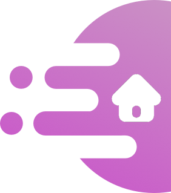
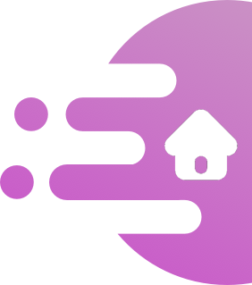

Scaffolded knowledge integration framework (SKIF) is an educational framework resulting from the synthesis of curricula programs (e.g., Computer as Learning Partner) and is designed to support learning thermodynamics [9]. In SKIF, students learn to link, connect, and integrate their understandings about a domain into a cohesive basis. From this unified base, students can apply their understandings to problems that are meaningful to them. The drive for SKIF is enabling students to examine new knowledge from their own perspective and conceptual framework, rather than adopt a view from the instructor [9]. From this student-centric level of progression, SKIF sees student knowledge as building blocks and encourages students to resolve discrepancies over memorizing facts and events.

Students enter into novel learning environments with some preexisting foundation to think from. Students have complex knowledge about models (e.g., heuristics, algorithms, representations, mechanisms, etc.) and need to consider how to expand, compare, ameliorate, define, integrate, and connect new information into their existing perspectives [11, 9]. In order to help students, whom are novices in a subject matter, SKIF is designed to facilitate the process where students improve their sophistication of knowledge models as well as distinguish among them.
The intent of this framework is not necessarily about the progression from novice to expert, rather it is about providing students with a strong foundation for future learning. Students will have a wide repertoire of models, rather than focusing on a single “correct” model or replacing models. An underlying goal of SKIF is that attitude toward learning can help prepare students to act as informed citizens [9].
Beginning with existing ideas, students need to build and integrate new knowledge that connects to what they already know. Accessibility can be met through scaffolding that builds up student understandings, or may bring in students' outside-of-school interests. An undertone of this framework is to connect the new models and knowledge to everyday life. In this perspective, what should be learned is how we use science in daily life rather than generating a new kind of “school only science.” By making this connection to the personal, the content to be learned switches from being driven by expert and abstract framing, which encourages memorization and isolation of new information, to being a meaningful experience that registers with existing ideas [12].
However, this does not mean that the learning should be something that is easy or comfortable to the student. The goal should be to base the learning on student knowledge and provide an engaging amount of difficulty. From this experience, a student can develop new models and understanding by overcoming the discrepancy between what they know and the new knowledge.

Students have many models of knowledge, and as they negotiate the differences between their existing knowledge and the new content, they need ways to evaluate the evidence of their thinking. The balance between becoming aware of one's thinking and having the teacher (or content) direct responsibility is delicate. Too little scaffolding or reduced awareness may hinder knowledge integration as a student struggles to exercise self-learning (e.g., [6, 17]), but by making thinking too visible and explicit encourages memorization over understanding [9].
The key to making thinking visible is to have reflection and activities that initiate an understanding of what has been done—exploring the hows and whys. Such skills can be developed by: acting as investigators to critique and evaluate evidence, reflecting on alternative explanations and situations, reflecting on how ideas change and develop, modeling dynamic systems, comparing expert-to-novice pathways, and engaging in continuous reasoning for developing an area of expertise [9].

Learning—philosophers and educations have long asserted—is a social medium (e.g., [4, 5]). Whether from Vygotsky's [19] “zone of proximal development” or from communities of learners [1], groups of students can leverage distributed knowledge to overcome challenges and support fellow learning. A prime example may be when a novice student learns expert behavior from more skilled students—communities of practice [14, 7, 15, 18]. The balance for social inclusion is delicate as well.
Group sizes of 3-4+ can begin to affect participation due to limited workspace, gender differences can develop into power dynamics, leaders can gain the most beneficial experience, and work can be distributed rather than collaborative (i.e., students work alone and combine results) [3, 13]. In order for peer support to be most effective, the designed activity needs to help students build and integrate knowledge cohesively. Also, smaller groups can help when in activities so that the work students accomplish relies on joint action in learning [8].
How students learn in school shouldn't be an exception from learning in life. Students should resonate with what they are learning about, as well as how they are learning the content. The approaches used during learning and the repertoire of models can be designed to be reusable and have utility in life. The common properties of inquiry (e.g., critiquing perspectives, planning experiments, testing ideas, and evaluating models) can give a student a strong general ability at inquiry [10].
The development and recognition of these life-long utility skills leads students to becoming autonomous learners—they become natural learners. While going through a SKIF experience, students should be encouraged to find and reflect on their knowledge models and evaluate their success in overcoming challenges. Other things like receiving feedback, writing summaries, making outlines, generating questions, and reflecting can help increase the quality of the learned knowledge [10]. Additionally, revisiting knowledge (either simply, or from a more challenging perspective) can also help mimic life-long learning. However, when there is a new perspective taken, the challenge comes with the additional benefit that retrieving information impacts knowledge usefulness more than traditionally studying the same content [2].
Apart from operational and in-line strategies, a final design can be to rely on sustained reasoning (i.e., studying one central topic to a high degree). With a central area of focus, students can develop a powerful base of information that helps them bridge to new ideas. Having deep experience in one domain lets students begin to organize knowledge and develop nuances of connected situations—making a solid base for future learning [10].

Learning in the class can be more than just passing a test, but can develop skills that are already known or familiar to the student. Lego Mindstorms are one way that students can feel like their personal interests matter, and that learning in school can be relevant to them. The vehicle below is one such example a student could make. This vehicle shakes and vibrates, and is controlled by programming code also written by the student.
Being aware of what is going on and why it is happening helps contextualize what needs to be learned. Programming the robotic vehicle puts the learning outcomes into a visual medium. The programming software also likely helps students understand how to get the robot to perform actions. Beyond how the robot helps students see what is going on, the learning setting should be designed to help students reflect on and test multiple ways to do things. For example, being able to see and understand what other students made, and how their design is different.
Learning in a vaccuum inhales immensely. Students should be building off each other's ideas and helping to solve problems. This is also a chance that students can explain what they know, and collaboratively build knowledge. For example, another student may suggest to the creator of the walker robot above that flat discs on its feet may improve stability. This kind of experience can benefit both students learning outcomes and engagement.
When one connects learning experiences in this way, they are not learning to jump through hoops but are becoming a life-long learner. Gaining new knowledge is a journey—not a series of obstacles—the student can take what they learn forward and become a "grown" learner.
References
1. Brown, A. L. & Campione, J. C. (1990). Communities of learning and thinking, or A context by any other name. Contributions to Human Development, 21, 108-126.
2. Bjork, R. A. (1994). Memory and metamemory considerations in the training of human beings.
3. Burbules, N. C. & Linn, M. C. (1991). Science education and the philosophy of science: Congruence or contradiction? International Journal of Science Education, 13(3), 227-241.
4. Dewey, J. (1901). Psychology and social practice, (Contributions to education). Chicago, IL: University of Chicago Press.
5. Dewey, J. (1929). The sources of a science of education*. New York: Horace Liveright.
6. Duschl, R. A. (1990). Restructuring science education: The importance of theories and their **development*. New York: Teacher’s College Press.
7. Lave, J. & Wenger, E. (1991). *Situated learning: Legitimate peripheral participation*. Cambridge, MA: Cambridge University Press.
8. Linn, M. C. (1992). The computer as learning partner: Can computer tools teach science? In Sheingold, K., Roberts, L. G., & Malcolm, S. M. (Eds.), This year in school science 1991: Technology for teaching and learning. Washington, DC: American Association for the Advancement of Science.
9. Linn, M. C. (1995). Designing computer learning environments for engineering and computer science: The scaffolded knowledge integration framework. Journal of Science Education and technology, 4(2), 103-126.
10. Linn, M. C., Davis, E. A., & Eylon, B. S. (2004). The scaffolded knowledge integration framework for instruction. *Internet environments for science education, 47-72.
11. Linn, M. C., diSessa, A., Pea, R. D., & Songer, N. B. (1994). Can research on science learning and instruction inform standards for science education? Journal of Science Education and Technology, 3(1), 7-15.
12. Linn, M. C., & Hsi, S. (2000). Computers, teachers, peers: Science learning partners. Routledge.
13. Madhok, J. J. (1992 April 4 & 5). Group size and gender composition influences on discussion. In 1992 Berkeley Women and Language Conference: Locating Power. Berkeley, CA: University of California.
14. Newman, D., Griffin, P., & Cole, M. (1989). The construction zone: Working for cognitive change in school. London: Cambridge University Press.
15. Pea, R. D. (1992). Augmenting the discourse of learning with computer-based learning environments. In De Corte, E., Linn, M. C., Mandl, H., & Verschaffel, L. (Eds.), Computer-based learning environments and problem solving. Berlin: Springer-Verlag.
16. Quintana, C. (2006). Learner-centered design: Reflections on the past and directions for the future.
17. Raizen, S. A. (1991). The reform of science education in the U.S.A. déjá vu or de novo? Studies in Science Education, 19, 1-41.
18. Scardamalia, M. & Bereiter, C. (1993). Technologies for knowledge-building discourse. Communications of the ACM, 36(5), 37-41.
19. Vygotsky, L. S. (1978). *Mind in society: The development of higher psychological processes (Cole, M., et al., Series Eds.). Cambridge, MA: Harvard University Press.

 

Designed and Developed by Nicholas Persa